Welcome to my E-Portfolio! Here you can explore my personal projects, ICT/TLE works, and AP activities.
Feel free to navigate through the menu (◍•ᴗ•◍). This is My Personal Space Area with my information :3!
ME
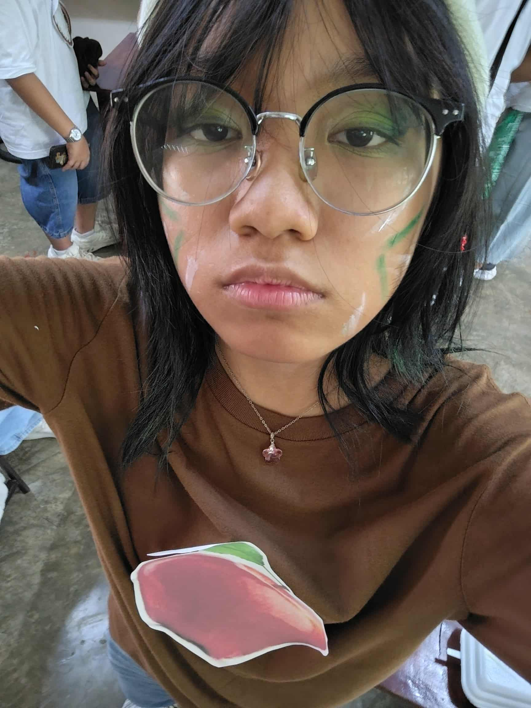
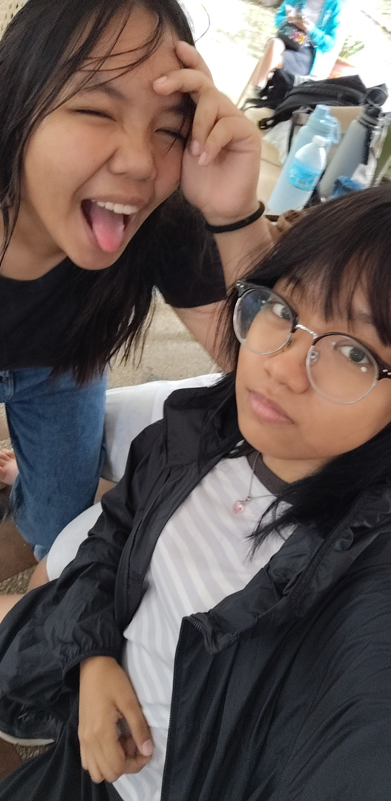
Hello, I'm Jelyne Irish B. Tabuzo! I am 14 years old, and I was born on June 26, 2011 :3.
I like reading manga and comics, solving puzzles, and doing housework around the house!
I currently live with my aunt in Las Pinas while my family is in Batangas.
Favorites & Interests
In my free time, I enjoy reading manga and comics especially this one manga called "The Guy She Was Interested In Wasn't A Guy At All!", solving puzzles like sudoku or rubiks cubes, and listening to music. I listen to a wide range of music! I also like to learn new skills in ICT/TLE and AP activities. Learning about these things in school is what I enjoy the most.
My favorite food is sinigang na bangus and my favorite drink is coke or a cokefloat!!
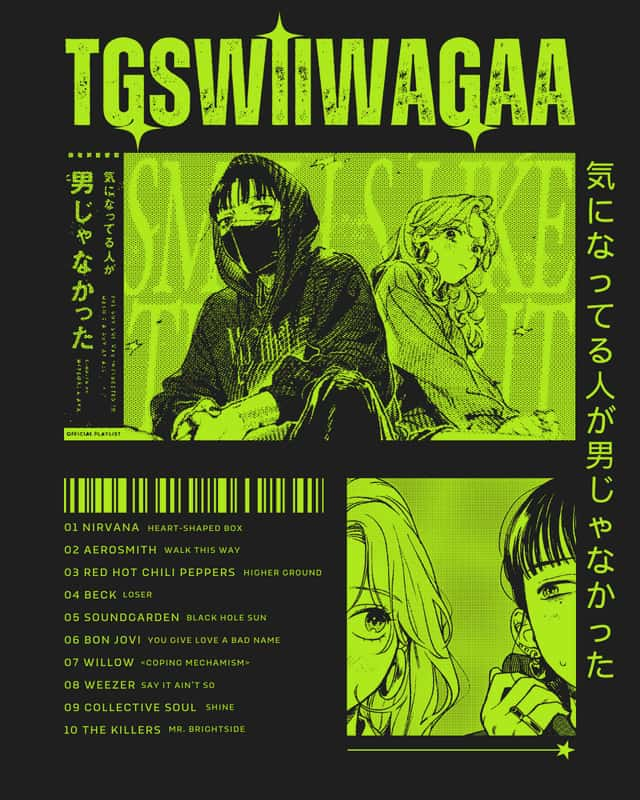
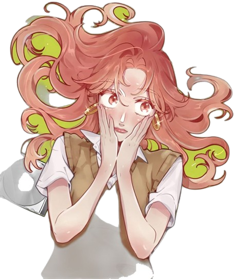
Circle of Friends
These are some of my closest friends! We spend time together in school and during activities. I cherish the memories we create and the fun we have together! My friends have been a constant support throughout my Grade 8 and 9 years. I met most of them when we were in the same section during grade 8, and ever since then, we've talked. We shared laughter, challenges, and memorable experiences that helped me grow. These are my people, the people who have been with me for a long time, experiencing exams, drama, cramming together, and having funny moments. They will always be on the back of my mind, and will forever be my second family.
We enjoy hanging out after class, or sometimes in cafes near the school to spend some time together.
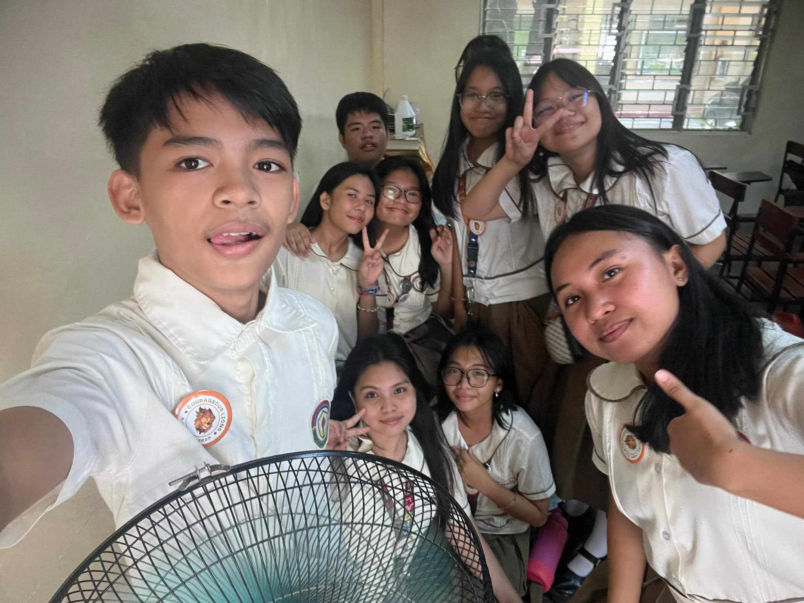
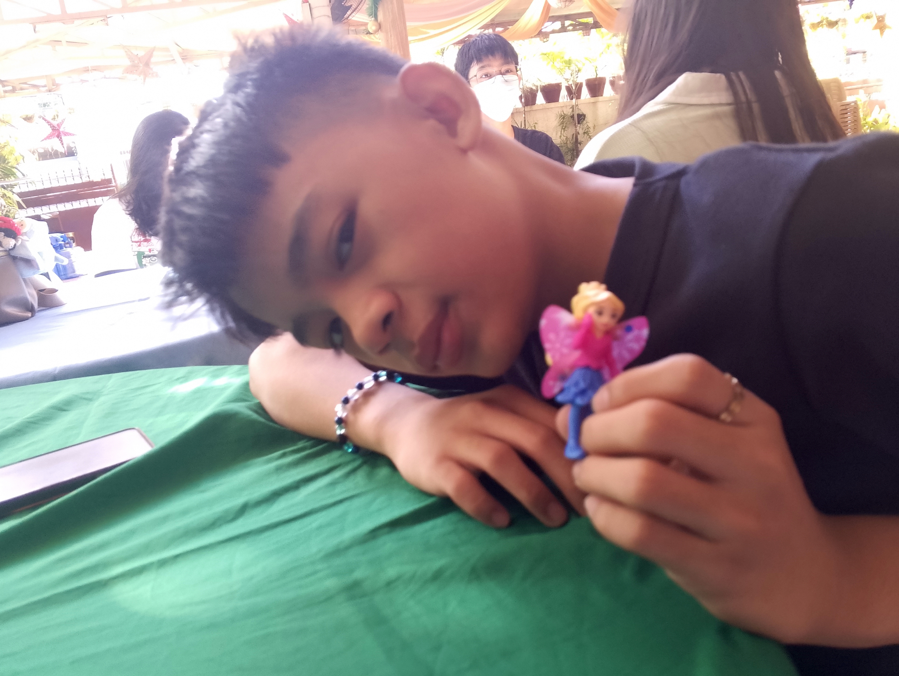
Family
These are some of the most important people in my life! I cherish the moments we spend together, the support we give each other, and the love that keeps our family strong. Family means everything to me, and I am grateful for every memory we create together. I deeply love my family and am thankful for their support. Even if I live far away, I feel their love and support right here. Their encouragement and love strengthens me, and every message and call reminds me of their presence and care in my life.
We enjoy sharing meals, celebrating special occasions, and simply spending quality time with one another. Family is my foundation and my constant source of happiness.
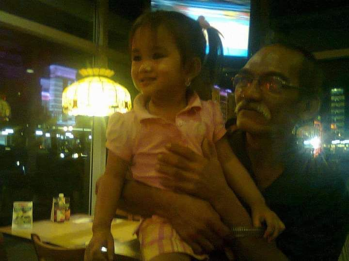
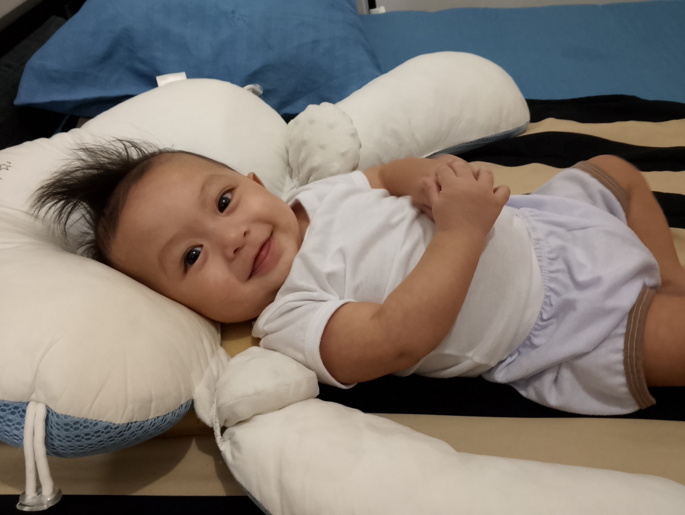
Favorite Person
This section is all about someone who inspires me, supports me, and makes my days brighter.
A collection of moments that capture why they’ll always be my favorite person ♡. Gab has been with me ever since we first met during grade 7. She captured my heart the moment I saw her. She's kind, funny, sweet, and the most amazing and hard-working person I've ever met. I love her so much and I'm glad to have her everyday, and she is my best friend. There's no one else I'd rather have than her.

 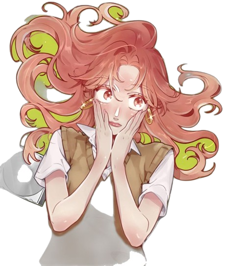
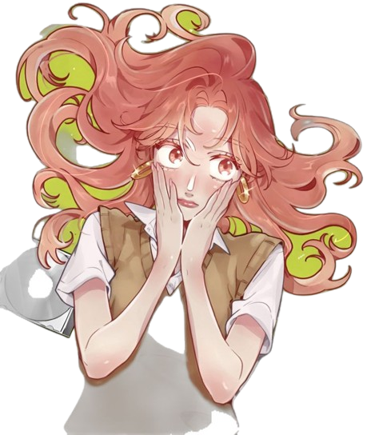
 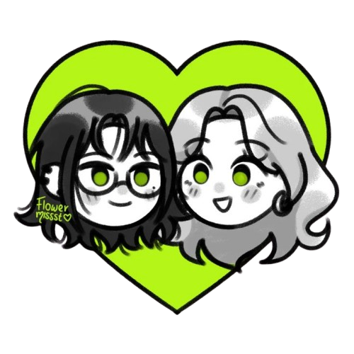
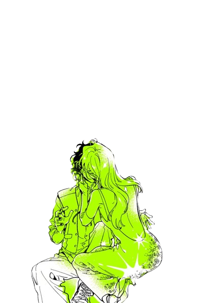
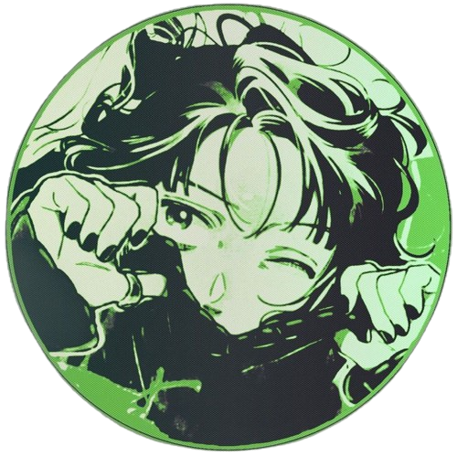
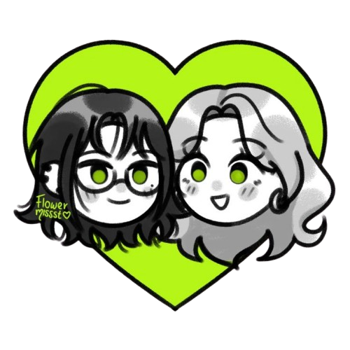
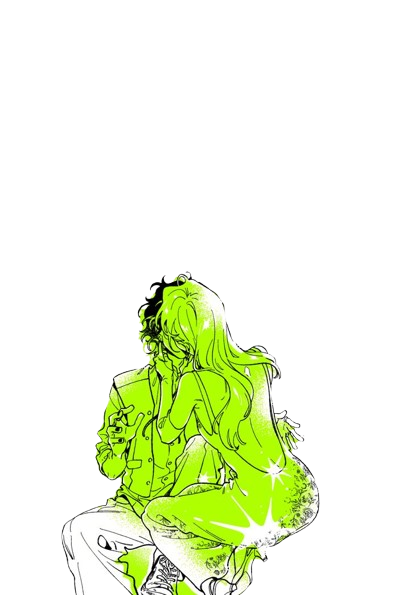
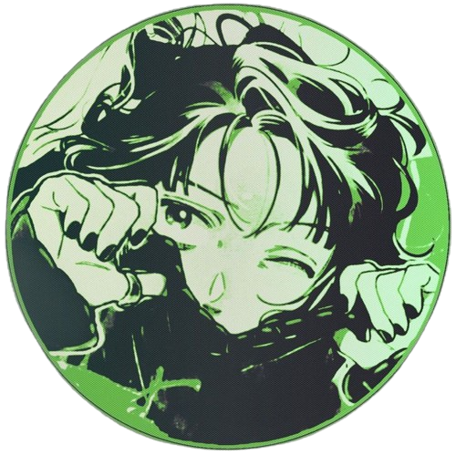